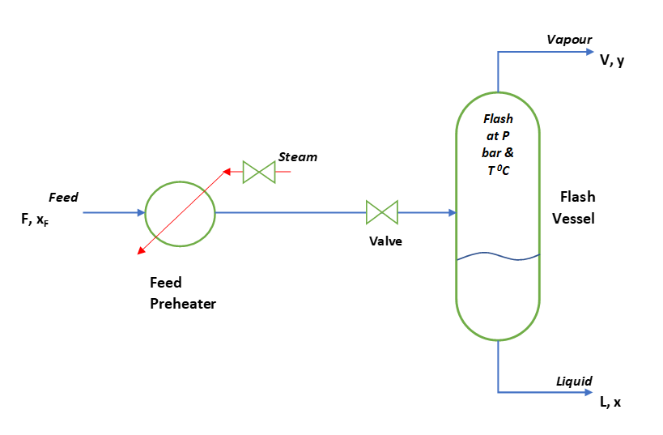

Destilación flash
Separación de una etapa por vaporización parcial: principio físico, tambor flash, balances de materia y energía, ecuación de Rachford-Rice y calculadora interactiva para mezclas binarias ideales.
Antes de diseñar una columna de destilación de múltiples platos, es fundamental comprender el caso más simple: una única etapa de equilibrio. La destilación flash — o vaporización flash — es exactamente eso: una alimentación líquida (o bifásica) que, al reducir súbitamente su presión o aumentar su temperatura, se separa en una fase vapor enriquecida en el componente volátil y una fase líquida empobrecida. Una sola etapa de equilibrio no logra la pureza de una columna, pero es un proceso rápido, continuo y de muy bajo capital que cumple roles estratégicos en la industria.

Si en la planta de pectina se dispone de una corriente de etanol a alta presión, una válvula de expansión puede separar parcialmente el etanol del agua antes de ingresar a la columna de destilación, reduciendo la carga de esa columna. También es relevante para pre-flash en columnas de destilación con múltiples corrientes de alimentación.
1. ¿Qué es la destilación flash?
La destilación flash (o vaporización flash) es un proceso de separación de una sola etapa en el que una corriente de alimentación líquida (o bifásica) se somete a una reducción abrupta de presión — al pasar por una válvula de expansión o un orificio — lo que provoca una vaporización parcial. La mezcla resultante, a la presión y temperatura flash, alcanza el equilibrio líquido-vapor y luego se separa físicamente en un tambor (flash drum) en dos corrientes:
- Vapor (V): corriente de vapor enriquecida en el componente más volátil (fracción molar \(y\)).
- Líquido (L): corriente de líquido empobrecida en el componente más volátil (fracción molar \(x\)).
Diferencia con la destilación convencional
| Característica | Flash (una etapa) | Columna de destilación |
|---|---|---|
| Etapas de contacto | Una | Varias (5 – 100+) |
| Grado de separación | Parcial — limitado por ELV de una etapa | Alto — control por diseño |
| Capital | Muy bajo (solo un tambor) | Medio a alto |
| Operación | Continua; sin partes móviles en el tambor | Continua con rehervidor y condensador |
| Usos típicos | Pre-separación, eliminación de gas disuelto, ajuste de punto de rocío | Purificación a alta especificación |
Posición en el diagrama T-x-y
El proceso flash puede visualizarse en el diagrama T-x-y de la mezcla: si la alimentación a composición \(z_F\) entra a la región bifásica (entre la curva de burbuja y la curva de rocío a la presión flash), la mezcla se separa en líquido de composición \(x\) (curva de burbuja) y vapor de composición \(y\) (curva de rocío) conectados por una línea de amarre horizontal (isoterma a \(T_{flash}\)).
Flash isotérmico: se especifica la temperatura del tambor (Tflash). Con Tflash y Pflash conocidas, el problema es algebraico directo para mezclas ideales (Raoult). Requiere intercambiador de calor para controlar T. Flash adiabático: no hay intercambio de calor con el entorno; la entalpía de la alimentación determina la temperatura de flash resultante. El cálculo es iterativo: suponer Tflash, calcular V/F, verificar balance de energía, iterar.
2. El tambor flash
El tambor flash (flash drum) es un recipiente vertical u horizontal en el que se permite que las dos fases creadas por la expansión alcancen el equilibrio termodinámico y se separen por gravedad. Los elementos principales son:
- Válvula de control de presión: aguas arriba del tambor; la expansión a través de la válvula genera la vaporización.
- Cuerpo del tambor: proporciona el tiempo de residencia y el espacio para la separación. Suele tener una longitud 3-5 veces su diámetro.
- Deflector o demister: elemento interno que elimina gotas de líquido arrastradas por el vapor antes de la salida superior.
- Control de nivel: mantiene la interfase líquido-vapor a la altura correcta mediante una válvula de control en la salida del líquido.
Aplicaciones industriales
| Aplicación | Descripción |
|---|---|
| Pre-flash en refinerías | Separa los gases livianos del crudo antes de la torre de destilación atmosférica |
| Eliminación de gases disueltos | CO₂ y O₂ disueltos en agua se eliminan por flash a vacío |
| Separación gas-líquido en yacimientos | El gas natural se separa del petróleo al reducir la presión aguas arriba del oleoducto |
| Generación de vapor (flash steam) | Condensado caliente de calderas produce vapor a presión más baja para aprovechar energía |
| Ciclos de refrigeración | El fluido refrigerante pasa por una válvula de expansión antes del evaporador |
3. Balances de materia, energía y condición de equilibrio
Variables del sistema
Para una alimentación de flujo molar \(F\) y composición \(z\) (fracción molar del componente más volátil) en un sistema binario a (Tflash, Pflash), las corrientes de salida son \(V\) (vapor, composición \(y\)) y \(L\) (líquido, composición \(x\)). Se define la fracción vaporizada como:
$$\Psi = \frac{V}{F} \qquad (0 \leq \Psi \leq 1)$$Balance global y por componente
$$F = V + L = \Psi F + (1-\Psi)F$$ $$F z = V y + L x = \Psi F y + (1-\Psi) F x$$Dividiendo entre F:
$$z = \Psi y + (1-\Psi) x$$Esta es la ecuación de la palanca (lever rule): si conocemos \(x\) e \(y\) del equilibrio (a Tflash, Pflash), podemos calcular \(\Psi\) directamente.
Condición de equilibrio (mezcla ideal)
Para una mezcla binaria ideal que sigue la Ley de Raoult:
$$y = K \cdot x \qquad \text{donde} \quad K = \frac{P^{sat}(T_{flash})}{P_{flash}}$$La constante de equilibrio \(K\) (también llamada constante de distribución o factor de equilibrio) depende de la temperatura flash y de la presión. Para el componente A (el más volátil):
$$K_A = \frac{P_A^{sat}(T_{flash})}{P_{flash}} \quad;\quad K_B = \frac{P_B^{sat}(T_{flash})}{P_{flash}}$$Nótese que \(K_A > 1 > K_B\) cuando el sistema está en la región bifásica.
Criterio de existencia de dos fases
Antes de resolver el flash hay que confirmar que la alimentación realmente se separa en dos fases a las condiciones \((T_{flash}, P_{flash})\). Esto se verifica con dos pruebas:
- Prueba del punto de burbuja — la mezcla está al menos en su punto de burbuja (empieza a hervir) si $$\sum_i K_i z_i \;\geq\; 1.$$ Si \(\sum_i K_i z_i < 1\), la alimentación es líquido subenfriado (todo líquido, \(\Psi = 0\)).
- Prueba del punto de rocío — la mezcla está a lo sumo en su punto de rocío (aún no totalmente vaporizada) si $$\sum_i \frac{z_i}{K_i} \;\geq\; 1.$$ Si \(\sum_i z_i/K_i < 1\), la alimentación es vapor sobrecalentado (todo vapor, \(\Psi = 1\)).
Solo cuando ambas condiciones se cumplen simultáneamente —es decir \(\sum_i K_i z_i > 1\) y \(\sum_i z_i/K_i > 1\)— existe equilibrio líquido-vapor con \(0 < \Psi < 1\). En ese rango la ecuación de Rachford-Rice tiene una raíz física única.
Si se aplica la fórmula de \(\Psi\) o Rachford-Rice fuera de la región bifásica, se obtienen valores \(\Psi < 0\) o \(\Psi > 1\), o composiciones fuera de \([0,1]\). La calculadora de la Sección 4 ejecuta primero estas dos pruebas y reporta «Líquido» o «Vapor» según corresponda.
Solución analítica para mezcla binaria ideal
En el binario A-B, las cuatro fracciones molares cumplen las relaciones de normalización \(x_A + x_B = 1\) e \(y_A + y_B = 1\), junto con el equilibrio \(y_A = K_A x_A\) y \(y_B = K_B x_B\). Combinando estas cuatro ecuaciones (independientes de \(\Psi\)):
$$y_A + y_B = K_A x_A + K_B x_B = K_A x_A + K_B (1 - x_A) = 1$$Despejando se obtiene la composición del líquido directamente a partir de las dos constantes de equilibrio:
$$x_A = \frac{1 - K_B}{K_A - K_B} \qquad;\qquad y_A = K_A\, x_A = \frac{K_A(1 - K_B)}{K_A - K_B}$$Estas composiciones de equilibrio dependen solo de \((T_{flash}, P_{flash})\) a través de \(K_A\) y \(K_B\); no dependen de la cantidad de alimentación que se vaporice. Una vez conocidas \(x_A\) e \(y_A\), la fracción vaporizada se obtiene despejándola de la ecuación de la palanca \(z_A = \Psi\, y_A + (1-\Psi)\, x_A\):
$$\Psi = \frac{z_A - x_A}{y_A - x_A} = \frac{z_A(K_A - K_B) - (1 - K_B)}{(K_A - 1)(1 - K_B)}$$Esta expresión es la solución cerrada del flash binario isotérmico ideal y es válida cuando \(0 < \Psi < 1\) (región bifásica). Para sistemas multicomponente no existe una forma cerrada análoga y se recurre a la ecuación de Rachford-Rice, que se detalla en la Sección 4.
Ver Sección 4 para la forma general (Rachford-Rice) que la calculadora resuelve numéricamente.
Balance de energía: flash isotérmico vs. adiabático
El balance de materia por sí solo no cierra el problema cuando no se especifica \(T_{flash}\). El balance de energía en estado estacionario para el tambor, despreciando cambios de energía cinética y potencial, es:
$$F\, h_F + Q = V\, H_V + L\, h_L$$donde \(h_F\) es la entalpía molar de la alimentación, \(h_L\) la del líquido de salida, \(H_V\) la del vapor de salida (todas a las condiciones del tambor) y \(Q\) el calor aportado o retirado. Las entalpías de las fases se evalúan respecto a un estado de referencia común, e \(H_V - h_L\) incluye el calor latente de vaporización.
- Flash isotérmico (\(T_{flash}\) especificada): el balance de materia y el equilibrio se resuelven primero —de forma independiente del balance de energía— y luego este último se usa para calcular el calor \(Q\) que el intercambiador debe aportar para sostener \(T_{flash}\). Es el caso de la calculadora de la Sección 4.
- Flash adiabático (\(Q = 0\)): la temperatura del tambor es desconocida y queda fijada por la entalpía con que llega la alimentación. Con \(Q = 0\), el balance de energía $$F\, h_F = V\, H_V + L\, h_L$$ se acopla al balance de materia y al equilibrio (que dependen de \(T_{flash}\) vía \(K_i(T)\)), formando un sistema no lineal. Se resuelve iterativamente: se supone \(T_{flash}\), se calcula \(\Psi\) y las composiciones por Rachford-Rice, se evalúa el balance de energía y se corrige \(T_{flash}\) hasta cerrarlo. Físicamente, la vaporización parcial consume calor latente y enfría la mezcla; por eso una válvula de expansión (estrangulamiento, proceso isentálpico \(h_F \approx h_{salida}\)) produce flash con caída de temperatura.
4. Ecuación de Rachford-Rice y calculadora
La ecuación de Rachford-Rice
Para un sistema multicomponente, la ecuación de Rachford-Rice es la forma canónica de resolver el flash isotérmico. Para un sistema de \(N_c\) componentes:
$$\sum_{i=1}^{N_c} \frac{z_i (K_i - 1)}{1 + \Psi(K_i - 1)} = 0$$Para el caso binario (A más volátil, B menos volátil), con \(z_B = 1 - z_A\):
$$\frac{z_A(K_A - 1)}{1 + \Psi(K_A - 1)} + \frac{(1 - z_A)(K_B - 1)}{1 + \Psi(K_B - 1)} = 0$$Para el binario esta ecuación es lineal en \(\Psi\) tras eliminar denominadores, y su raíz coincide con la solución cerrada deducida en la Sección 3:
$$\Psi = \frac{z_A(K_A - K_B) - (1 - K_B)}{(K_A - 1)(1 - K_B)}$$Para sistemas multicomponente (\(N_c > 2\)) la suma de Rachford-Rice es una función monótona decreciente de \(\Psi\) que no admite forma cerrada; se resuelve numéricamente (bisección o Newton-Raphson) buscando la raíz en \(0 < \Psi < 1\). Conocida \(\Psi\), las composiciones de cada fase son:
$$x_i = \frac{z_i}{1 + \Psi(K_i - 1)} \qquad;\qquad y_i = K_i \cdot x_i$$Algoritmo de cálculo flash isotérmico
Calculadora flash binaria isotérmica
Sistema etanol (A) – agua (B). Ajuste T y P de flash para ver la fracción vaporizada y las composiciones de vapor y líquido. Usa constantes de Antoine: etanol A=8,112 B=1592,9 C=226,2; agua A=8,071 B=1730,6 C=233,4.
Si yetanol = z = xetanol, la alimentación está fuera de la región bifásica (líquido o vapor puro a esas condiciones).
5. Bibliografía
- McCabe, W. L., Smith, J. C., & Harriott, P. (2005). Unit Operations of Chemical Engineering (7.ª ed.). McGraw-Hill. (Cap. 18: Equilibrium Separations, sección Flash Distillation).
- Seader, J. D., Henley, E. J., & Roper, D. K. (2011). Separation Process Principles (3.ª ed.). Wiley. (Cap. 5: Cascades and Hybrid Systems).
- Rachford, H. H., & Rice, J. D. (1952). Procedure for use of electronic digital computers in calculating flash vaporization hydrocarbon equilibrium. Journal of Petroleum Technology, 4(10), 19–3.
- Smith, J. M., Van Ness, H. C., & Abbott, M. M. (2005). Introduction to Chemical Engineering Thermodynamics (7.ª ed.). McGraw-Hill. (Cap. 10: vapor-liquid equilibrium).
- Perry, R. H., & Green, D. W. (Eds.) (2019). Perry's Chemical Engineers' Handbook (9.ª ed.). McGraw-Hill. (Sección 4: Thermodynamics; Sección 13: Distillation).